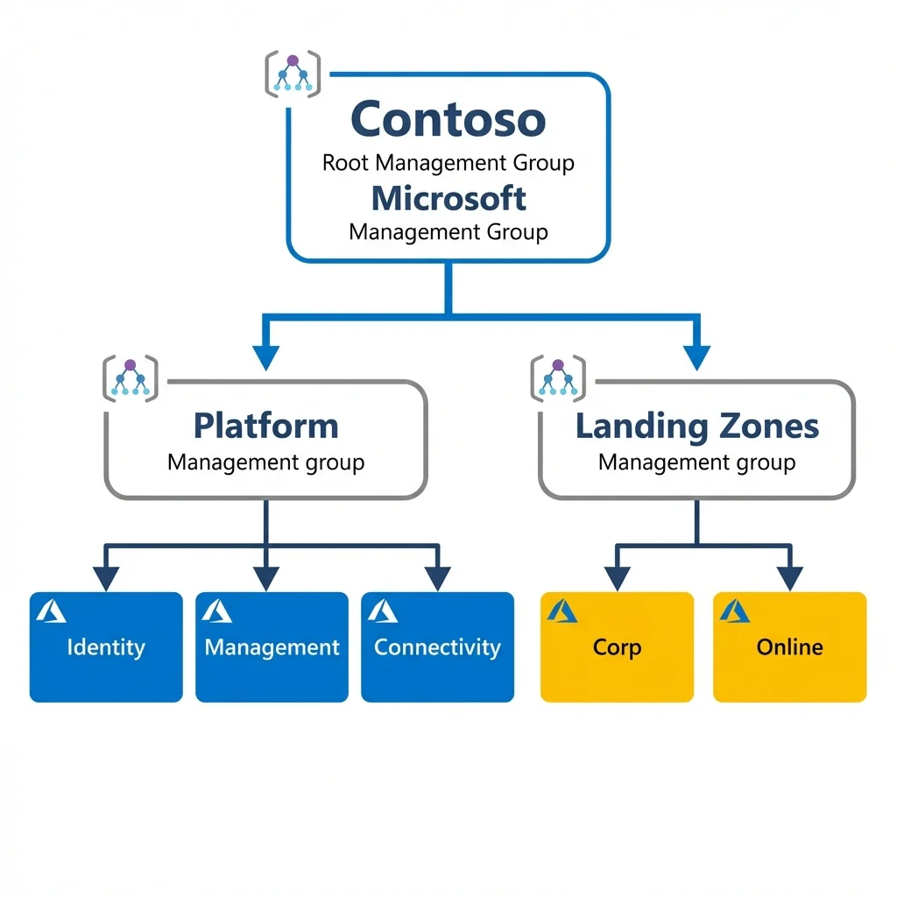
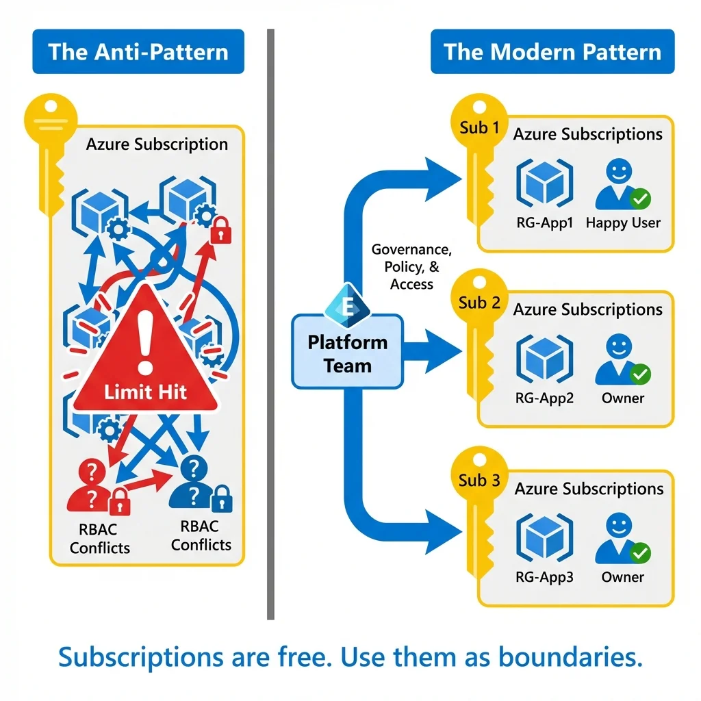
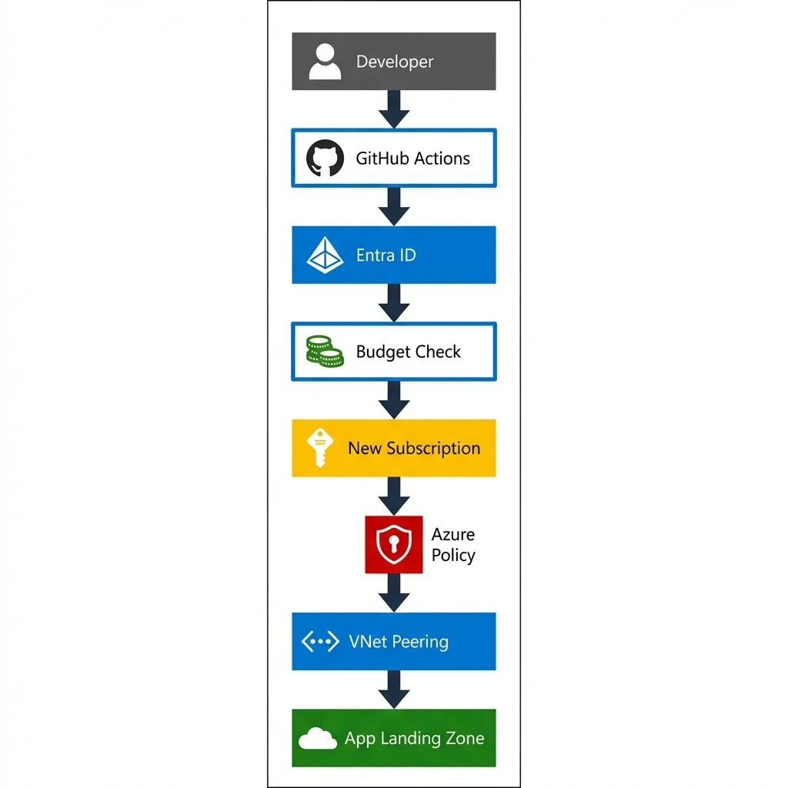
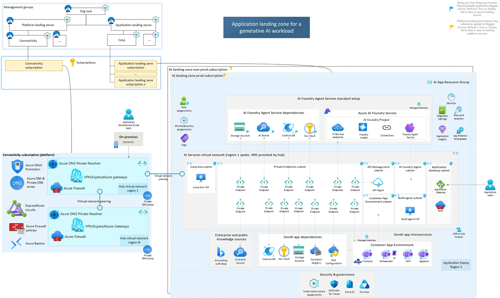

"We finished the Landing Zone project last month. Why is the security dashboard already red?"
I hear this from CIOs every week. They treat Azure Landing Zones (ALZ) like a construction project: pouring concrete, putting up walls, and handing over the keys. But cloud isn't concrete. It's fluid. And a "finished" Landing Zone with no operating model is just a legacy environment waiting to happen.
The Lie (What the Industry Sells)
Consultants and glossy slide decks will tell you that ALZ is a deployment. Just clone the Official Azure Landing Zones Repo, run the "Enterprise-Scale" Terraform module, and congratulations—you are now "Enterprise Ready". (If you ignore the hundreds of open issues that reveal the messy reality of Day 2 operations).

The trap is believing that once the Bicep files run green, the job is done. Leaders fire the consultants, hand the "keys" to operations, and walk away.
The Truth (A Realist's Check)
1. ALZ is an Operating Model, Not a Repo
The code is the easy part. The hard part is the politics of permission. If your Landing Zone doesn't have a Platform Team to curate it, entropy will win.
2. The "Day 2" Cliff
90% of the work isn't landing the zone; it's preventing it from becoming a swamp.
The Fix (Senior Advice)
Treat Platform as a Product (PaaP)
Your Landing Zone needs a Product Owner, a roadmap, and customers (your app teams).
The "Subscription Democratization" Strategy
A common myth is that Azure Subscriptions are expensive or difficult to manage. This leads to the "Noisy Neighbor" anti-pattern: stuffing 50 disjointed apps into one subscription.
The Reality: Subscriptions are a unit of Governance, not just billing. They provide:
- Isolation: One team's bad code can't hit the API rate limits of another team.
- Security: You can safely grant "Owner" rights to a team within their specific subscription boundary without risking the platform.
- Cost Clarity: No complex tagging required; the bill is split at the root.

The "Subscription Vending" Requirement
Democratize access. You must automate subscription vending below. Microsoft's official Subscription Vending Guidance expressly states: "Subscription vending standardizes the process... so that application teams can deploy their workloads faster."
Don't reinvent the wheel. Use the official Azure Verified Modules (AVM):
- Bicep: Sub Vending Bicep Module
- Terraform: Sub Vending Terraform Module

The Next Frontier: AI-Ready Landing Zones

Recently, organizations have been scrambling to adopt the Azure AI Landing Zone reference architectures. The pattern remains the same: Governance must enable speed.
To accelerate enterprise AI adoption, you cannot just "open the firewall." You need a dedicated "Smart Router" pattern:
- Shared AI Hub: Centralize your APIM and Cognitive Services provisioning to prevent quota starvation. See the Shared Capabilities Model.
- Private Networking: OpenAI endpoints must sit behind Private Endpoints in a spoke, peered to your centralized hub. No public access. Ever. (Read the reference architecture here).
Kill ClickOps
Read-Only Access for EVERYONE in Production. Yes, even you, the lead architect. If you can't fix it via a Pull Request, you haven't built a resilient platform. You're just improvising.